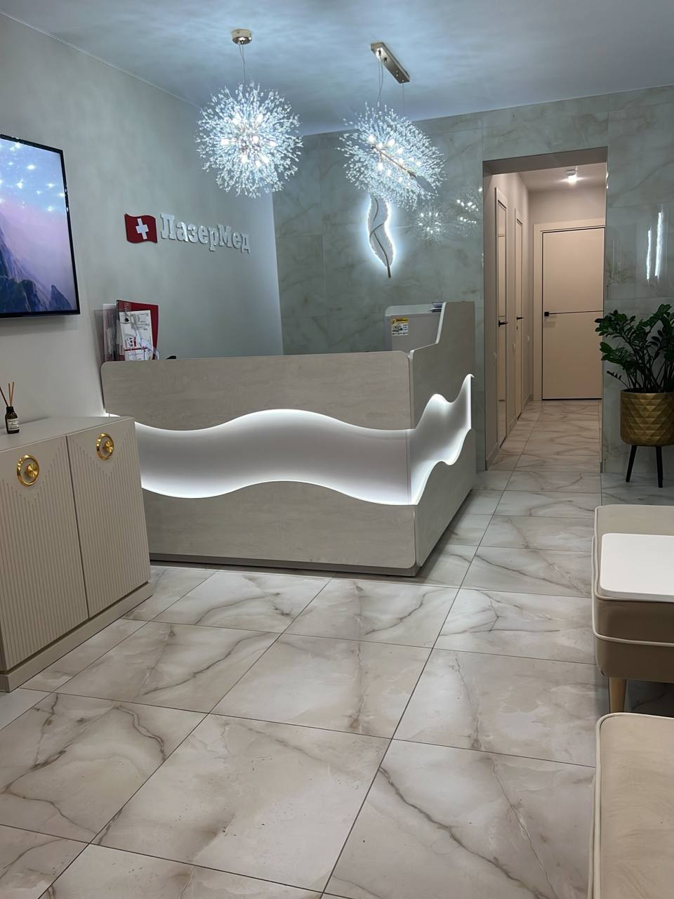
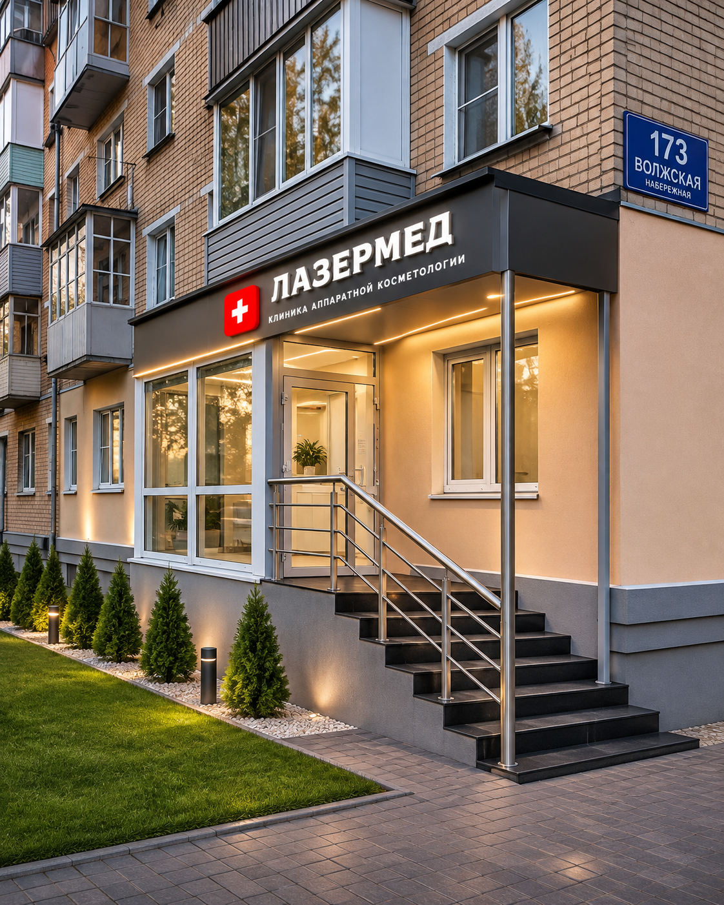
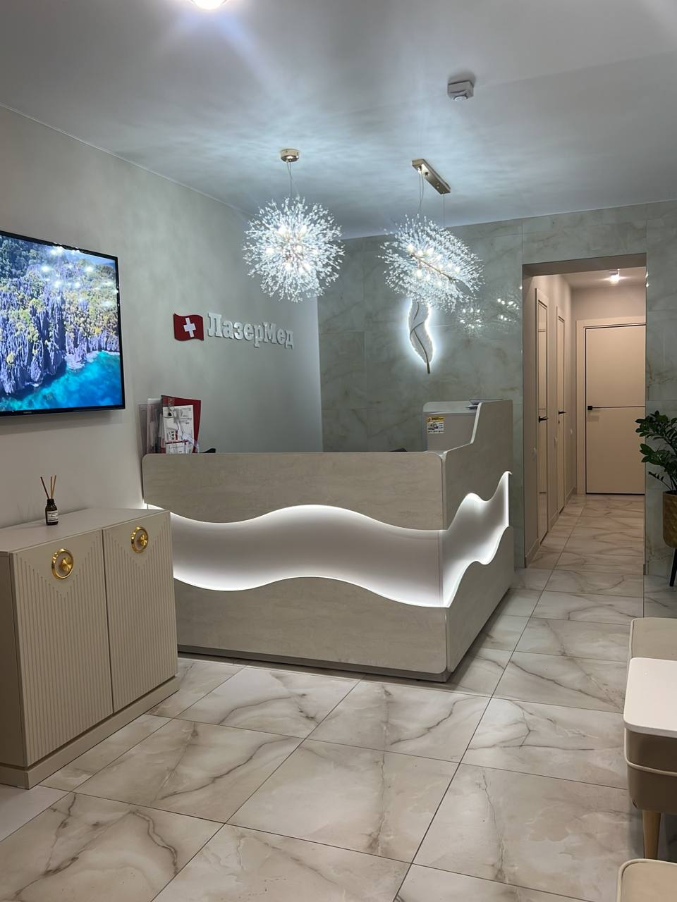
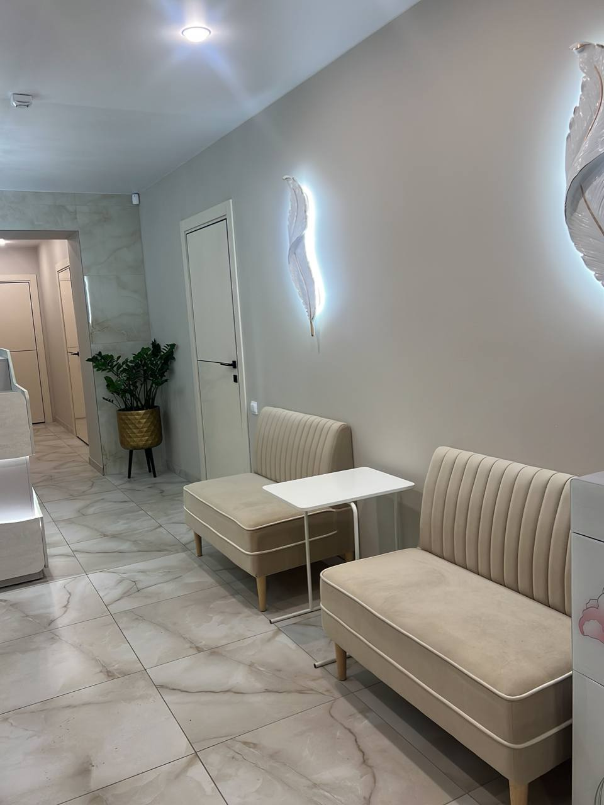

Лазерная эпиляция
Александритовый лазер Quanta System, зоны и комплексы.
Посмотреть цены →Клиника аппаратной косметологии с александритовой лазерной эпиляцией, отдельным кабинетом косметологии и вниманием к деталям.
Рыбинск, Волжская набережная, 173

Выберите нужную услугу. Выберите направление, чтобы посмотреть фотографии, информацию об услугах и условия записи.
Знакомьтесь с нашей командой. На фотографии — специалист направления косметологии.
Подробную информацию о специалистах и расписании можно уточнить по телефону клиники.
Уточнить записьЗагляните внутрь клиники: ресепшен, зона ожидания и кабинеты.



Уточним стоимость, ответим на вопросы и подберём удобное время.
Позвонить +7 (920) 133-53-53